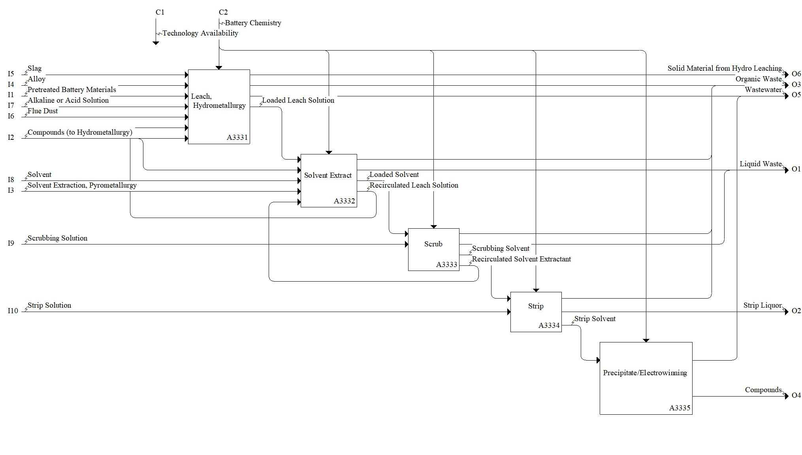

Model: Hydrometallurgy

Description
Notes:None
Definitions:
Hydrometallurgy - branch of extractive metallurgy that uses aqueous solutions, or water-based chemical processes to extract and purify metals from ores or waste streams through processes such as leaching, solvent extraction, and ion exchange.
Standards:
ISO 77.120, Non-ferrous metals: Including classification, designation, sampling, chemical analysis, etc.
ISO/IEC 17025:2017, General requirements for the competence of testing and calibration laboratories
ISO 4907-1:2023 Plastics - Ion exchange resin - Part 1: Determination of exchange capacity of acrylic anion exchange resins
ASTM E2941-21, Standard Practices for Extraction of Elements from Ores and Related Metallurgical Materials by Acid Digestion
References:
Brückner L, Frank J, Elwert T (2020) Industrial recycling of lithium-ion batteries-a critical review of metallurgical process routes. Metals, 10(8), 1107. https://doi.org/10.3390/met10081107
Chagnes A, Pospiech B (2013) A brief review on hydrometallurgical technologies for recycling spent lithium-ion batteries. Journal of Chemical Technology & Biotechnology, 88(7), 1191-1199. https://doi.org/10.1002/jctb.4053
Larouche F, Tedjar F, Amouzegar K, Houlachi G, Bouchard P, Demopoulos GP, Zaghib K (2020) Progress and status of hydrometallurgical and direct recycling of Li-ion batteries and beyond. Materials, 13(3), 801. https://doi.org/10.3390/ma13030801
Lee C, Arby DS, Kim C, Lim J, Kwon K, Chung E (2025) Hydrometallurgical process of spent lithium-ion battery recycling Part. 1 Chemical leaching of valuable metals from cathode active materials: Review and case study. Hydrometallurgy, 106494. https://doi.org/10.1016/j.hydromet.2025.106494
Mantuano DP, Dorella G, Elias RCA, Mansur MB (2006) Analysis of a hydrometallurgical route to recover base metals from spent rechargeable batteries by liquid-liquid extraction with Cyanex 272. Journal of Power Sources, 159(2), 1510-1518. https://doi.org/10.1016/j.jpowsour.2005.12.056
McLaughlin W, Adams TS (1999) Li reclamation process (U.S. Patent No. US5888463A). United States Patent and Trademark Office (as cited in Pinegar et al., (2019)).
Pinegar H, Smith YR (2019) Recycling of end-of-life lithium ion batteries, Part I: Commercial processes. Journal of Sustainable Metallurgy, 5(3), 402-416. https://doi.org/10.1007/s40831-019-00235-9
Sonoc A, Jeswiet J, Ghahreman A (2021) Hydrometallurgical recycling of lithium-ion battery electrodes (U.S. Patent No. US20230187720A1) United States Patent and Trademark Office.
Swain B, Jeong J, Lee JC, Lee GH, Sohn JS (2007) Hydrometallurgical process for recovery of cobalt from waste cathodic active material generated during manufacturing of lithium ion batteries. Journal of Power Sources, 167(2), 536-544. https://doi.org/10.1016/j.jpowsour.2007.02.046
Tedjar F, Foudraz JC (2013) Method for the mixed recycling of lithium-based anode batteries and cells (Canadian Patent No. CA 2559928 C). Canadian Intellectual Property Office (as cited in Pinegar et al., (2019)).
Zhang P, Yokoyama T, Itabashi O, Suzuki TM, Inoue K (1998) Hydrometallurgical process for recovery of metal values from spent lithium-ion secondary batteries. Hydrometallurgy, 47(2-3), 259-271. https://doi.org/10.1016/S0304-386X(97)00050-9
Parent Activity: Hydrometallurgy
Disclaimer: Certain commercial equipment, instruments, or materials are identified in this documentation to foster understanding. Such identification does not imply recommendation or endorsement by the National Institute of Standards and Technology, nor does it imply that the materials or equipment identified are necessarily the best available for the purpose.